Communication 1
The dates of the exam sessions are all confirmed, and are:
25 January 2019
15 March 2019
22 May 2019
21 June 2019
17 July 2019
20 September 2019
For each date:
written examination: 10-12
project oral colloquium: 13-16
Communication 2
Goal: organise the (unofficial) aperitif the course
- Who: teachers + students
- What: chatting, drinking, having fun
- Where: TBA (once we know about the number of participants)
- When: 19th of December at 19:00
- Why: celebrating the end of the course and the coming holidays
Please add your name in the link provided in the Telegram group if you would like to join
Any question about the previous lecture?
Historic hero: Fibonacci

He was a mathematician
First person to introduce in Europe the Hindu-Arabic number system (i.e. 0, 1, 2, 3, 4, 5, 6, 7, 8, 9)
Publication Liber Abaci (Book of Calculation) in 1202: how to use such numeral system for addressing situations related to commerce, and for solving generic mathematical problems
Fibonacci sequence
Fibonacci developed an infinite sequence of numbers, named after him, that described ideally the number of male-female pairs of rabbits at a given month
fib(0) = 0 [base case 1]
fib(1) = 1 [base case 2]
fib(n) = fib(n-1) + fib(n-2) [recursive step]
Fibonacci: divide and conquer
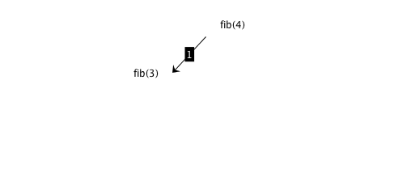
Fibonacci: divide and conquer
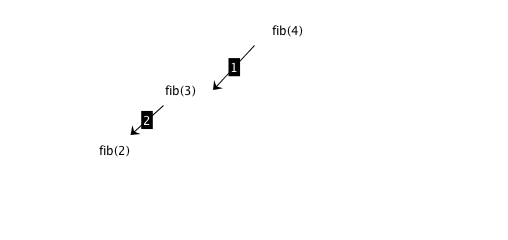
Fibonacci: divide and conquer
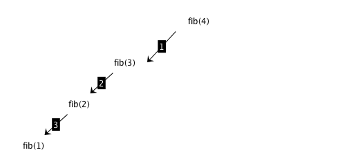
Fibonacci: divide and conquer
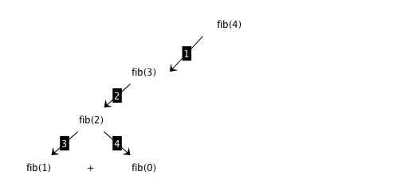
Fibonacci: divide and conquer
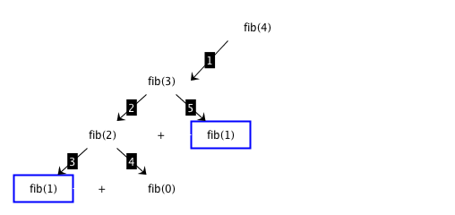
Fibonacci: divide and conquer
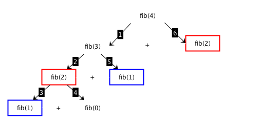
Fibonacci: divide and conquer
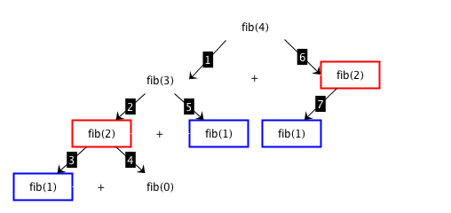
Fibonacci: divide and conquer
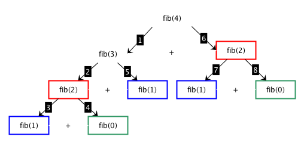
Fibonacci (divide and conquer): algorithm
def fib_dc(n):
if n == 0 or n == 1:
return n
else:
return fib_dc(n-1) + fib_dc(n-2)Dynamic programming approach
Dynamic programming algorithm is based on six steps
[base case: solution exists] return the solution calculated previously, otherwise
[base case: address directly] address directly if it is an easy-to-solve problem, otherwise
[divide] split the input material into two or more balanced parts, each depicting a sub-problem of the original one
[conquer] run the same algorithm recursively for every balanced parts obtained in the previous step
[combine] reconstruct the final solution of the problem by means of the partial solutions
[memorize] store the solution to the problem for reusing it
Fibonacci: dynamic programming
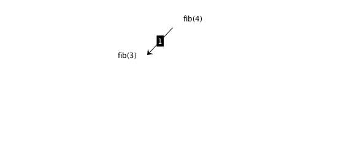
Fibonacci: dynamic programming
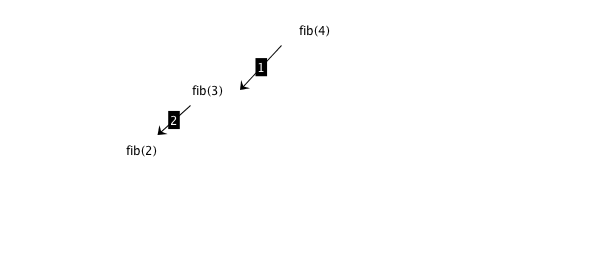
Fibonacci: dynamic programming
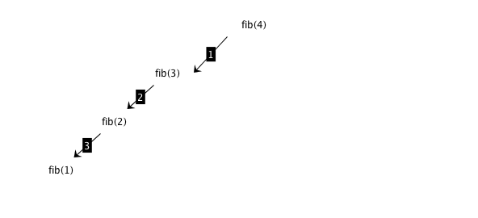
Fibonacci: dynamic programming
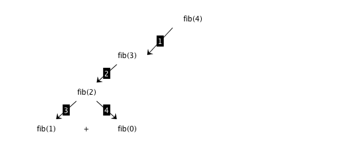
Fibonacci: dynamic programming
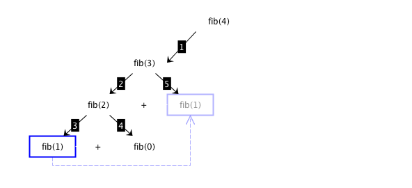
Fibonacci: dynamic programming
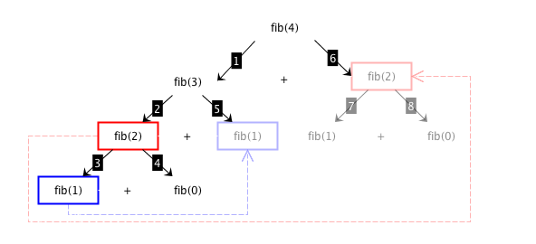
Fibonacci: ancillary operations
Non-inclusion in dictionary:
<key> not in <dictionary>
Comparison that returns True if <key> is not included as key in any pair of <dictionary>
Parameter with default assignment
def <algorithm>(<param_d>=<default>)
Initialises <param_d> with the default value specified if no value is passed for the execution of the algorithm
E.g., considering def test(n=0), executing test(4) assigns the specified number to n, while executing test() assigns the default value 0 to n
Fibonacci (dynamic programming): algorithm
def fib_dp(n, d=dict()):
if n not in d:
if n == 0 or n == 1:
d[n] = n
else:
d[n] = fib_dp(n-1, d) + fib_dp(n-2, d)
return d[n]